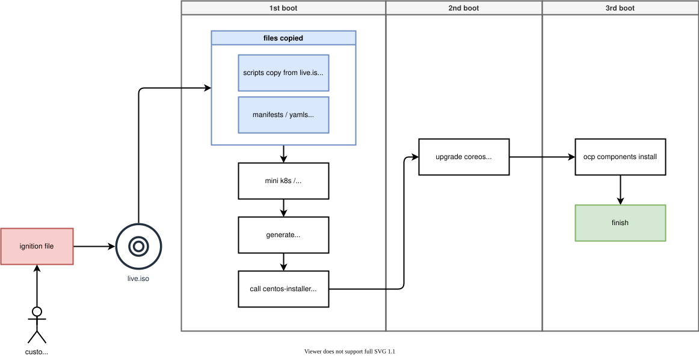

openshift 4.10 single node, installer 安装，离线静态IP
openshift single node 是可以用installer来安装的，但是很多客户都遇到问题，这里我们就来试一下。
本文有一个前导实验，就是创建 helper node ， 这个工具机用来做一个跳板，模拟离线环境的proxy
installer 的内部安装逻辑图：

视频讲解
on helper node
NODE_SSH_KEY="$(cat ~/.ssh/id_rsa.pub)"
INSTALL_IMAGE_REGISTRY=quaylab.infra.redhat.ren:8443
PULL_SECRET='{"auths":{"registry.redhat.io": {"auth": "ZHVtbXk6ZHVtbXk=","email": "noemail@localhost"},"registry.ocp4.redhat.ren:5443": {"auth": "ZHVtbXk6ZHVtbXk=","email": "noemail@localhost"},"'${INSTALL_IMAGE_REGISTRY}'": {"auth": "'$( echo -n 'admin:shadowman' | openssl base64 )'","email": "noemail@localhost"}}}'
NTP_SERVER=192.168.7.11
HELP_SERVER=192.168.7.11
KVM_HOST=192.168.7.11
API_VIP=192.168.7.100
INGRESS_VIP=192.168.7.101
CLUSTER_PROVISION_IP=192.168.7.103
BOOTSTRAP_IP=192.168.7.12
ACM_DEMO_MNGED_CLUSTER=acm-demo1
ACM_DEMO_MNGED_SNO_IP=192.168.7.15
# 定义单节点集群的节点信息
SNO_CLUSTER_NAME=acm-demo-hub
SNO_BASE_DOMAIN=redhat.ren
SNO_IP=192.168.7.13
SNO_GW=192.168.7.11
SNO_NETMAST=255.255.255.0
SNO_NETMAST_S=24
SNO_HOSTNAME=acm-demo-hub-master
SNO_IF=enp1s0
SNO_IF_MAC=`printf '00:60:2F:%02X:%02X:%02X' $[RANDOM%256] $[RANDOM%256] $[RANDOM%256]`
SNO_DNS=192.168.7.11
SNO_DISK=/dev/vda
SNO_CORE_PWD=redhat
echo ${SNO_IF_MAC} > /data/sno/sno.mac
mkdir -p /data/install
cd /data/install
/bin/rm -rf *.ign .openshift_install_state.json auth bootstrap manifests master*[0-9] worker*[0-9]
cat << EOF > /data/install/install-config.yaml
apiVersion: v1
baseDomain: $SNO_BASE_DOMAIN
compute:
- name: worker
replicas: 0
controlPlane:
name: master
replicas: 1
metadata:
name: $SNO_CLUSTER_NAME
networking:
# OVNKubernetes , OpenShiftSDN
networkType: OVNKubernetes
clusterNetwork:
- cidr: 10.128.0.0/14
hostPrefix: 23
serviceNetwork:
- 172.30.0.0/16
platform:
none: {}
bootstrapInPlace:
installationDisk: $SNO_DISK
pullSecret: '${PULL_SECRET}'
sshKey: |
$( cat /root/.ssh/id_rsa.pub | sed 's/^/ /g' )
additionalTrustBundle: |
$( cat /etc/crts/redhat.ren.ca.crt | sed 's/^/ /g' )
imageContentSources:
- mirrors:
- ${INSTALL_IMAGE_REGISTRY}/ocp4/openshift4
source: quay.io/openshift-release-dev/ocp-release
- mirrors:
- ${INSTALL_IMAGE_REGISTRY}/ocp4/openshift4
source: quay.io/openshift-release-dev/ocp-v4.0-art-dev
EOF
openshift-install create manifests --dir=/data/install
/bin/cp -f /data/ocp4/ocp4-upi-helpernode-master/machineconfig/* /data/install/openshift/
# copy image registry proxy related config
cd /data/ocp4
bash image.registries.conf.sh nexus.infra.redhat.ren:8083
/bin/cp -f /data/ocp4/image.registries.conf /etc/containers/registries.conf.d/
/bin/cp -f /data/ocp4/99-worker-container-registries.yaml /data/install/openshift
/bin/cp -f /data/ocp4/99-master-container-registries.yaml /data/install/openshift
cd /data/install/
openshift-install --dir=/data/install create single-node-ignition-config
alias coreos-installer='podman run --privileged --rm \
-v /dev:/dev -v /run/udev:/run/udev -v $PWD:/data \
-w /data quay.io/coreos/coreos-installer:release'
# /bin/cp -f bootstrap-in-place-for-live-iso.ign iso.ign
cat << EOF > /data/sno/static.hostname.bu
variant: openshift
version: 4.9.0
metadata:
labels:
machineconfiguration.openshift.io/role: master
name: 99-zzz-master-static-hostname
storage:
files:
- path: /etc/hostname
mode: 0644
overwrite: true
contents:
inline: |
${SNO_HOSTNAME}
EOF
cat << EOF > /data/sno/static.ip.bu
variant: openshift
version: 4.9.0
metadata:
labels:
machineconfiguration.openshift.io/role: master
name: 99-zzz-master-static-ip
storage:
files:
- path: /etc/NetworkManager/system-connections/${SNO_IF}.nmconnection
mode: 0600
overwrite: true
contents:
inline: |
[connection]
id=${SNO_IF}
type=ethernet
autoconnect-retries=1
interface-name=${SNO_IF}
multi-connect=1
permissions=
wait-device-timeout=60000
[ethernet]
mac-address-blacklist=
[ipv4]
address1=${SNO_IP}/${SNO_NETMAST_S=24},${SNO_GW}
dhcp-hostname=${SNO_HOSTNAME}
dhcp-timeout=90
dns=${SNO_DNS};
dns-search=
may-fail=false
method=manual
[ipv6]
addr-gen-mode=eui64
dhcp-hostname=${SNO_HOSTNAME}
dhcp-timeout=90
dns-search=
method=disabled
[proxy]
EOF
source /data/ocp4/acm.fn.sh
# butane /data/sno/static.bootstrap.ip.bu > /data/sno/disconnected/99-zzz-bootstrap-ip.yaml
# get_file_content_for_ignition "/opt/openshift/openshift/99-zzz-bootstrap-ip.yaml" "/data/sno/disconnected/99-zzz-bootstrap-ip.yaml"
# VAR_99_master_bootstrap_ip=$RET_VAL
# VAR_99_master_bootstrap_ip_2=$RET_VAL_2
butane /data/sno/static.hostname.bu > /data/sno/disconnected/99-zzz-master-static-hostname.yaml
get_file_content_for_ignition "/opt/openshift/openshift/99-zzz-master-static-hostname.yaml" "/data/sno/disconnected/99-zzz-master-static-hostname.yaml"
VAR_99_master_master_static_hostname=$RET_VAL
VAR_99_master_master_static_hostname_2=$RET_VAL_2
butane /data/sno/static.ip.bu > /data/sno/disconnected/99-zzz-master-ip.yaml
get_file_content_for_ignition "/opt/openshift/openshift/99-zzz-master-ip.yaml" "/data/sno/disconnected/99-zzz-master-ip.yaml"
VAR_99_master_ip=$RET_VAL
VAR_99_master_ip_2=$RET_VAL_2
# 我们会创建一个wzh用户，密码是redhat，这个可以在第一次启动的是，从console/ssh直接用用户名口令登录
# 方便排错和研究
VAR_PWD_HASH="$(python3 -c 'import crypt,getpass; print(crypt.crypt("redhat"))')"
# tmppath=$(mktemp)
cat /data/install/bootstrap-in-place-for-live-iso.ign \
| jq --arg VAR "$VAR_PWD_HASH" --arg VAR_SSH "$NODE_SSH_KEY" '.passwd.users += [{ "name": "wzh", "system": true, "passwordHash": $VAR , "sshAuthorizedKeys": [ $VAR_SSH ], "groups": [ "adm", "wheel", "sudo", "systemd-journal" ] }]' \
| jq --argjson VAR "$VAR_99_master_ip_2" '.storage.files += [$VAR] ' \
| jq --argjson VAR "$VAR_99_master_master_static_hostname" '.storage.files += [$VAR] ' \
| jq --argjson VAR "$VAR_99_master_ip" '.storage.files += [$VAR] ' \
| jq -c . \
> /data/install/iso.ign
# jump to other document here, if you want to customize the ignition file for partition and user
# then comeback
/bin/cp -f /data/ocp4/rhcos-live.x86_64.iso sno.iso
coreos-installer iso ignition embed -fi iso.ign sno.isoon kvm host ( 103 )
# 创建实验用虚拟网络
mkdir -p /data/kvm
cd /data/kvm
cat << 'EOF' > /data/kvm/bridge.sh
#!/usr/bin/env bash
PUB_CONN='eno1'
PUB_IP='172.21.6.103/24'
PUB_GW='172.21.6.254'
PUB_DNS='172.21.1.1'
nmcli con down "$PUB_CONN"
nmcli con delete "$PUB_CONN"
nmcli con down baremetal
nmcli con delete baremetal
# RHEL 8.1 appends the word "System" in front of the connection,delete in case it exists
nmcli con down "System $PUB_CONN"
nmcli con delete "System $PUB_CONN"
nmcli connection add ifname baremetal type bridge con-name baremetal ipv4.method 'manual' \
ipv4.address "$PUB_IP" \
ipv4.gateway "$PUB_GW" \
ipv4.dns "$PUB_DNS"
nmcli con add type bridge-slave ifname "$PUB_CONN" master baremetal
nmcli con down "$PUB_CONN";pkill dhclient;dhclient baremetal
nmcli con up baremetal
EOF
bash /data/kvm/bridge.sh
nmcli con mod baremetal +ipv4.addresses "192.168.7.103/24"
nmcli con up baremetal
cat << EOF > /root/.ssh/config
StrictHostKeyChecking no
UserKnownHostsFile=/dev/null
EOF
pvcreate -y /dev/vdb
vgcreate vgdata /dev/vdb
# https://access.redhat.com/articles/766133
lvcreate -y -n poolA -L 500G vgdata
lvcreate -y -n poolA_meta -L 10G vgdata
lvconvert -y --thinpool vgdata/poolA --poolmetadata vgdata/poolA_meta
scp root@192.168.7.11:/data/install/sno.iso /data/kvm/
virsh destroy ocp4-acm-hub
virsh undefine ocp4-acm-hub
create_lv() {
var_vg=$1
var_pool=$2
var_lv=$3
var_size=$4
var_action=$5
lvremove -f $var_vg/$var_lv
# lvcreate -y -L $var_size -n $var_lv $var_vg
if [ "$var_action" == "recreate" ]; then
lvcreate --type thin -n $var_lv -V $var_size --thinpool $var_vg/$var_pool
wipefs --all --force /dev/$var_vg/$var_lv
fi
}
create_lv vgdata poolA lvacmhub 100G recreate
create_lv vgdata poolA lvacmhub-data 100G recreate
SNO_MEM=64
virt-install --name=ocp4-acm-hub-master01 --vcpus=16 --ram=$(($SNO_MEM*1024)) \
--cpu=host-model \
--disk path=/dev/vgdata/lvacmhub,device=disk,bus=virtio,format=raw \
--disk path=/dev/vgdata/lvacmhub-data,device=disk,bus=virtio,format=raw \
--os-variant rhel8.3 --network bridge=baremetal,model=virtio \
--graphics vnc,port=59002 \
--boot menu=on --cdrom /data/kvm/sno.iso
# --disk path=/dev/vgdata/lvacmhub-data,device=disk,bus=virtio,format=raw \on helper to see result
cd /data/install
export KUBECONFIG=/data/install/auth/kubeconfig
echo "export KUBECONFIG=/data/install/auth/kubeconfig" >> ~/.bashrc
oc completion bash | sudo tee /etc/bash_completion.d/openshift > /dev/null
cd /data/install
openshift-install wait-for install-complete --log-level debug
# INFO Install complete!
# INFO To access the cluster as the system:admin user when using 'oc', run 'export KUBECONFIG=/data/install/auth/kubeconfig'
# INFO Access the OpenShift web-console here: https://console-openshift-console.apps.acm-demo-hub.redhat.ren
# INFO Login to the console with user: "kubeadmin", and password: "M5hQw-NizfX-qKzEq-eUnNk"
# DEBUG Time elapsed per stage:
# DEBUG Cluster Operators: 9m39s
# INFO Time elapsed: 9m39sback and merge kubeconfig
mkdir -p ~/.kube/bak/
var_date=$(date '+%Y-%m-%d-%H%M')
/bin/cp -f /data/install/auth/kubeconfig ~/.kube/bak/kubeconfig-$var_date
/bin/cp -f /data/install/auth/kubeadmin-password ~/.kube/bak/kubeadmin-password-$var_date
sed "s/admin/admin\/$SNO_CLUSTER_NAME/g" /data/install/auth/kubeconfig > /tmp/config.new
# https://medium.com/@jacobtomlinson/how-to-merge-kubernetes-kubectl-config-files-737b61bd517d
/bin/cp -f ~/.kube/config ~/.kube/config.bak && KUBECONFIG=~/.kube/config:/tmp/config.new kubectl config view --flatten > /tmp/config && /bin/mv -f /tmp/config ~/.kube/config
unset KUBECONFIGadd worker node
我们装好了single node，那么接下来，我们还可以给这个single node添加worker节点，让这个single node cluster变成一个单master的集群。
# first, lets stick ingress to master
oc label node acm-demo-hub-master ocp-ingress-run="true"
oc patch ingresscontroller default -n openshift-ingress-operator --type=merge --patch='{"spec":{"nodePlacement":{"nodeSelector": {"matchLabels":{"ocp-ingress-run":"true"}}}}}'
# we are testing env, so we don't need ingress replicas.
oc patch --namespace=openshift-ingress-operator --patch='{"spec": {"replicas": 1}}' --type=merge ingresscontroller/default
oc get -n openshift-ingress-operator ingresscontroller/default -o yaml
# then we get worker's ignition file, and start worker node, add it to cluster
oc extract -n openshift-machine-api secret/worker-user-data --keys=userData --to=- > /var/www/html/ignition/sno-worker.ign
HELP_SERVER=192.168.7.11
# 定义单节点集群的节点信息
SNO_IP=192.168.7.16
SNO_GW=192.168.7.11
SNO_NETMAST=255.255.255.0
SNO_HOSTNAME=acm-demo-hub-worker-01
SNO_IF=enp1s0
SNO_DNS=192.168.7.11
SNO_DISK=/dev/vda
SNO_MEM=16
BOOT_ARG=" ip=$SNO_IP::$SNO_GW:$SNO_NETMAST:$SNO_HOSTNAME:$SNO_IF:none nameserver=$SNO_DNS coreos.inst.install_dev=${SNO_DISK##*/} coreos.inst.ignition_url=http://$HELP_SERVER:8080/ignition/sno-worker.ign"
/bin/cp -f /data/ocp4/rhcos-live.x86_64.iso sno.iso
coreos-installer iso kargs modify -a "$BOOT_ARG" sno.iso
# go to kvm host ( 103 )
scp root@192.168.7.11:/data/install/sno.iso /data/kvm/
virsh destroy ocp4-acm-hub-worker01
virsh undefine ocp4-acm-hub-worker01
create_lv() {
var_vg=$1
var_pool=$2
var_lv=$3
var_size=$4
var_action=$5
lvremove -f $var_vg/$var_lv
# lvcreate -y -L $var_size -n $var_lv $var_vg
if [ "$var_action" == "recreate" ]; then
lvcreate --type thin -n $var_lv -V $var_size --thinpool $var_vg/$var_pool
wipefs --all --force /dev/$var_vg/$var_lv
fi
}
create_lv vgdata poolA lvacmhub-worker01 120G recreate
# create_lv vgdata poolA lvacmhub-worker01-data 100G remove
virt-install --name=ocp4-acm-hub-worker01 --vcpus=16 --ram=$(($SNO_MEM*1024)) \
--cpu=host-model \
--disk path=/dev/vgdata/lvacmhub-worker01,device=disk,bus=virtio,format=raw \
`# --disk path=/dev/vgdata/lvacmhub-data,device=disk,bus=virtio,format=raw` \
--os-variant rhel8.3 --network bridge=baremetal,model=virtio \
--graphics vnc,port=59003 \
--boot menu=on --cdrom /data/kvm/sno.iso
# after 2 boot up,
# go back to helper
oc get csr
oc get csr -ojson | jq -r '.items[] | select(.status == {} ) | .metadata.name' | xargs oc adm certificate approve